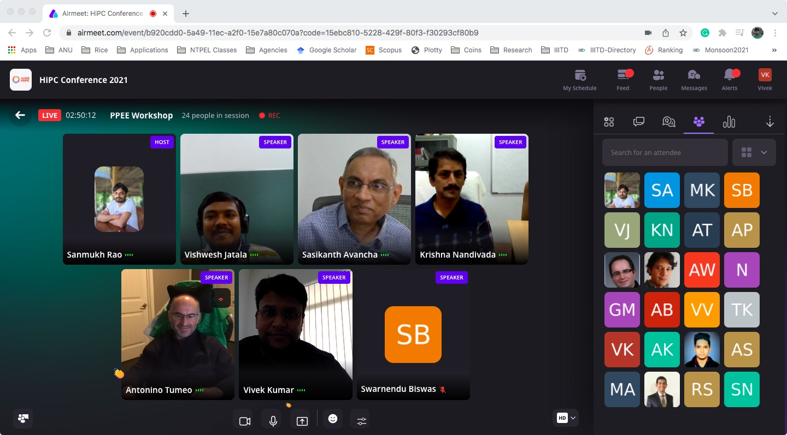
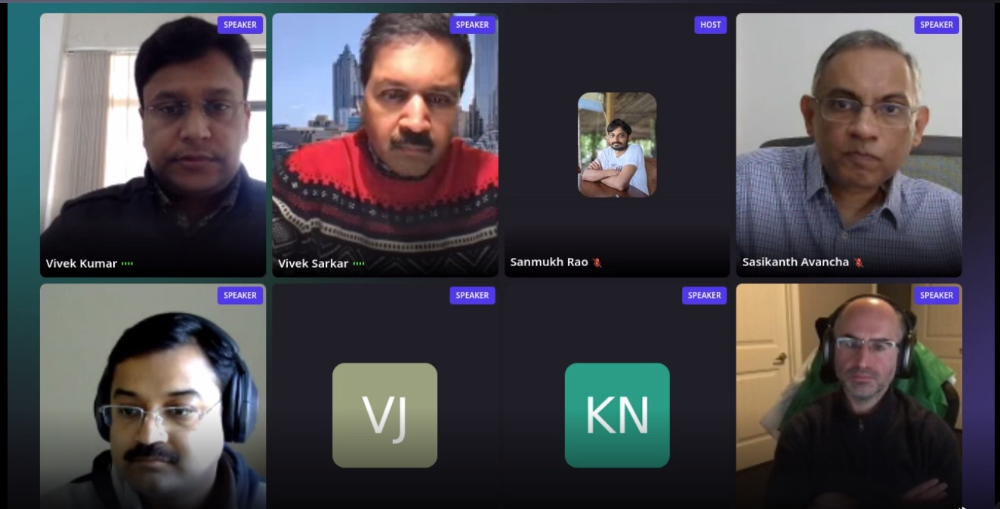
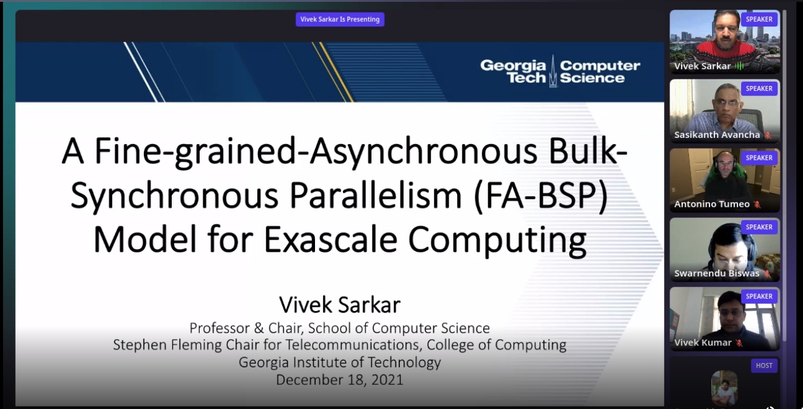
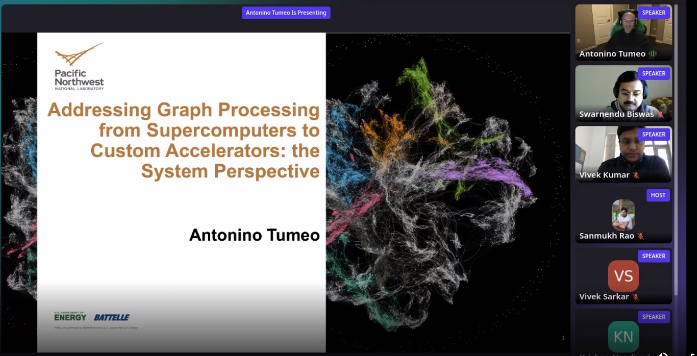
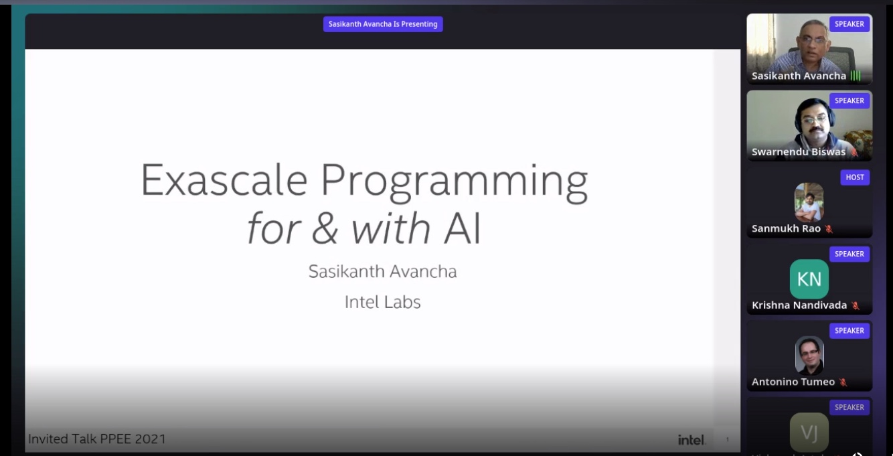
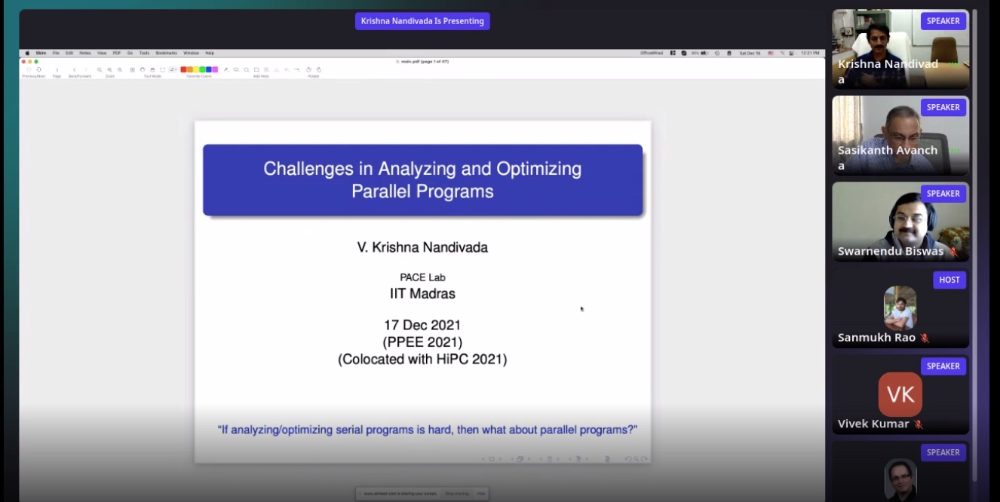

NEWS
- December 5th: Workshop schedule available online
- November 6th: Details of invited talk speakers
- October 23rd: Submission deadline extended!
- October 8th: PC list announced
WORKSHOP SCHEDULE
PPEE '21 workshop is on 18th December 2021 from 10am to 12pm. It will run only in virtual mode due to Covid. There will not be any paper presentation, but we have four invited talks from eminent speakers. Details of the workshop schedule are as mentioned below. Attendees must register for the workshop. You can find the details on registration here: https://hipc.org/registration-info/.
OVERVIEW
The upcoming exascale systems will impose new requirements on application developers and programming systems to target platforms with hundreds of homogeneous and heterogeneous cores. The four critical challenges for exascale systems are extreme parallelism, power demand, data movement, and reliability. These systems are aimed to solve problems that were previously out of reach and improve the parallel performance of applications by a factor of 50x. The power budget for achieving a billion billion (quintillion) floating-point operations per second (exaflops) should be within 20-30 MW. Moving the data on these systems relative to the computation will be challenging due to complex memory hierarchies. It would be essential to keep the CPUs/accelerators busy once they have the data to avoid memory bottlenecks. Failures on these systems are anticipated to occur many times a day, such that the existing approach for resiliency, such as checkpointing and restart, will not work.
TOPICS
The goal of this workshop is to attract leading researchers to exchange ideas and share their work-in-progress and latest results to address the exascale software challenges. Topics of interest include, but are not limited to:
- High-level programming models for many-cores / accelerators
- Compilation techniques for hybrid CPU/accelerator parallelism
- Intra- / Inter-node load balancing and scheduling
- Runtime systems for high performance and high productivity;
- Comparisons of runtime systems and parallel programming models
- OS/runtime and system software for manycore systems, accelerators, and non-uniform memory hierarchy
- Optimizing data locality and data movement
- Energy efficiency and optimizations;
- Resilience and fault-tolerance
- Scalable algorithms
- Scalable synchronization mechanisms
- Concurrent data structures
- Applying machine learning techniques in HPC
IMPORTANT DATES
- Abstract Submission Deadline:
October 24, 2021
November 05, 2021 (encouraged) - Paper Submission Deadline:
October 31, 2021
November 10, 2021 (hard deadline) - Paper Notification:
November 15, 2021
November 20, 2021 - Presentation Slides Upload Deadline:
November 22, 2021
November 30, 2021
SUBMISSION GUIDELINES
Papers are to be submitted online in PDF format through Easychair at: https://easychair.org/conferences/?conf=ppee2021.
Submitted manuscripts should be structured as technical papers and must not exceed five (5) single-spaced double-column pages using 10-point size font on 8.5×11 inch pages (IEEE conference style), including figures, tables, and references. The submitted paper should list the authors and their affiliations. The IEEE conference style templates for MS Word and LaTeX provided by IEEE eXpress Conference Publishing are available for download. See the latest versions here. Electronic submissions must be in the form of a readable PDF file.
The accepted papers will be invited for presentation at the workshop. However, these papers will NOT be published in the conference proceedings. This will allow the authors to publish an extended version of their paper at other venues after benefiting from reviewer feedback from the workshop. Papers will be judged on technical merit, quality, and relevance to the workshop. Plagiarism, in any form, especially verbatim reproduction from other published works, is prohibited. Papers that are plagiarized will be rejected, and the corresponding department and institution will be notified.
ORGANIZATION COMMITTEE
- Vivek Kumar, IIIT-Delhi, India
- Swarnendu Biswas, IIT Kanpur, India
- Vishwesh Jatala, IIT Bhilai, India
PROGRAM COMMITTEE
- Dip Sankar Banerjee, IIT Jodhpur
- Gokul Swamy, Amazon
- Jyothi Vedurada, IIT Hyderabad
- Nikhil Hegde, IIT Dharwad
- Preeti Malakar, IIT Kanpur
- Sanket Tavarageri, Microsoft
- Soumyajit Dey, IIT Kharagpur
- Sridutt Bhalachandra, Lawrence Berkeley National Laboratory
- Yogish Sabharwal, IBM Research
- TBA
INVITED TALK SPEAKERS


WORKSHOP PICTURES
     